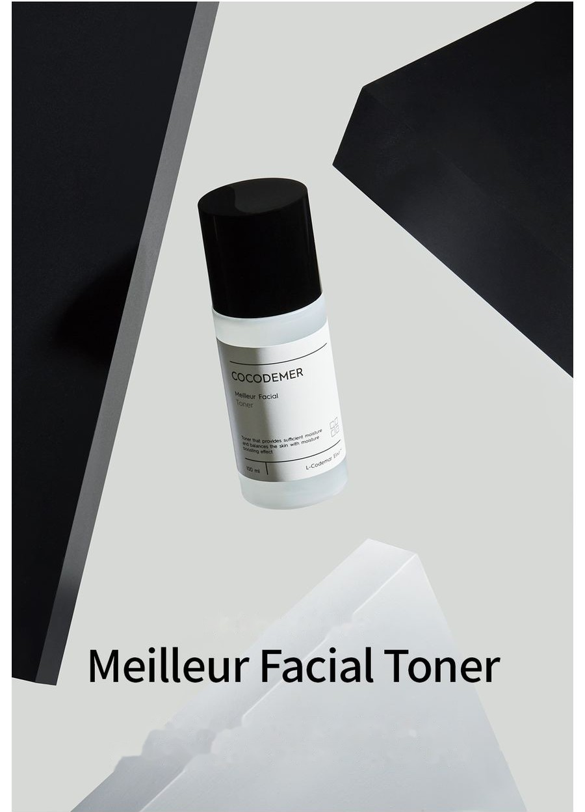
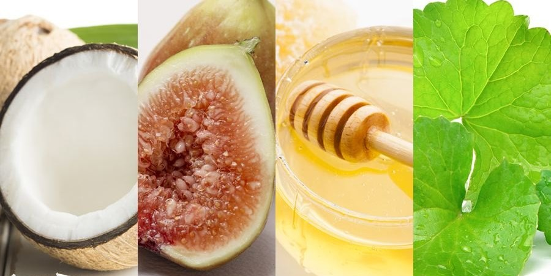
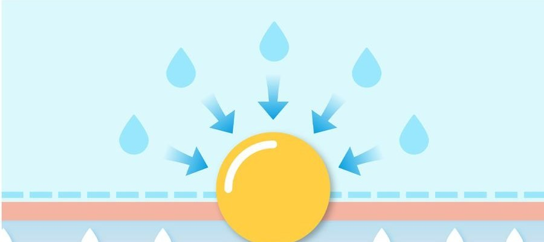

COCODEMER Meilleur Facial Toner
| Volume | 100ml |
|---|---|
| Suitable for | All skin types |
| Key technology | L-CODEMAR ELIXIR™ |
| Manufacturer · Responsible distributor | JUNGCOS CO., LTD. / COCODEMER CO., LTD. |
This product is not yet listed on the Smart Store. For purchases, please use the store, or contact us through the B2B inquiry.

A richly moisturising toner that boosts hydration and helps balance the skin
A deeply moisturising toner with a fresh feel and a smooth, luminous finish
Holds moisture in the skin so it stays comfortable for hours, and leaves it in the best condition to take in the next step.
Niacinamide and Adenosine help improve pigmentation and wrinkles in a single step.
Protects proteins and cell membranes, the skin's principal components, creating a healthy environment beneath the surface for skin that is clear and full of life.
An optimal balance of over 80% water and 13% water-soluble moisturising ingredients keeps tightness to a minimum. Hyaluronic Acid, Betaine and the botanical soothing agents Ficus Carica (Fig) Fruit Extract and Centella Asiatica Extract calm the skin and hold a full day's moisture, leaving it firm and resilient.
Proteins, a principal component of the skin, protect cell membranes and create a healthy environment beneath the surface. Oligosaccharides hold water within the epidermis, defending against dryness and outside stress. They also reduce irritation on fragile skin and deliver immediate hydration, helping to relieve dryness deep down.
Key Active Code
- MoMoisturizing
- AwAnti Wrinkles
- WhWhitening
- TbTrouble relief
- BsBase

80% water and 13% water-soluble humectants form a veil of moisture that keeps skin's water-holding capacity intact and helps soothe sensitised skin.
It promotes collagen and elastin synthesis, which improves wrinkles and helps prevent new ones forming. It also raises skin elasticity, helping to improve damaged skin.
A derivative of water-soluble vitamin B3. It inhibits tyrosinase activation to block melanin formation and suppress pigmentation, and it reduces the compounds that oxidise collagen — brightening the skin tone and helping prevent dark spots.

Oligosaccharides form a protective film that stops moisture evaporating and guards against water loss. An active B vitamin soothes the skin and strengthens its barrier, leaving it healthy and full of vitality.
* The above describes the ingredients, not the finished product.
See the ingredient reference →
L-CODEMAR ELIXIR™
COCODEMER's proprietary technology.
Our multi-layer nano-gel emulsion encapsulation technology holds the core actives — coconut water, phytosterols, 20 amino acids and honey extract — in a stable complex. That complex is then built into a skin-friendly liposomal form that mirrors the structure of skin itself, for the most efficient delivery into the skin.
L-Codemar Elixir™ strengthens the bonds between skin cells. It restores a damaged barrier and forms a strong protective film, so hydration holds for longer.


How To Use
- After cleansing, as the first step of your routine, take a suitable amount and smooth it gently from the centre of the face outwards, following the grain of the skin.
- Pat lightly to help it absorb.
* If using a cotton pad, apply a suitable amount to the pad and sweep it along the skin as though smoothing it into place.
A deeply moisturising toner with a fresh feel and a smooth, luminous finish
Holds moisture in the skin so it stays comfortable for hours, and leaves it in the best condition to take in the next step.
Niacinamide and Adenosine help improve pigmentation and wrinkles in a single step.
Protects proteins and cell membranes, the skin's principal components, creating a healthy environment beneath the surface for skin that is clear and full of life.
An optimal balance of over 80% water and 13% water-soluble moisturising ingredients keeps tightness to a minimum. Hyaluronic Acid, Betaine and the botanical soothing agents Ficus Carica (Fig) Fruit Extract and Centella Asiatica Extract calm the skin and hold a full day's moisture, leaving it firm and resilient.
Proteins, a principal component of the skin, protect cell membranes and create a healthy environment beneath the surface. Oligosaccharides hold water within the epidermis, defending against dryness and outside stress. They also reduce irritation on fragile skin and deliver immediate hydration, helping to relieve dryness deep down.
80% water and 13% water-soluble humectants form a veil of moisture that keeps skin's water-holding capacity intact and helps soothe sensitised skin.
It promotes collagen and elastin synthesis, which improves wrinkles and helps prevent new ones forming. It also raises skin elasticity, helping to improve damaged skin.
A derivative of water-soluble vitamin B3. It inhibits tyrosinase activation to block melanin formation and suppress pigmentation, and it reduces the compounds that oxidise collagen — brightening the skin tone and helping prevent dark spots.
Oligosaccharides form a protective film that stops moisture evaporating and guards against water loss. An active B vitamin soothes the skin and strengthens its barrier, leaving it healthy and full of vitality.
* The above describes the ingredients, not the finished product.
L-CODEMAR ELIXIR™
COCODEMER's proprietary technology. Our multi-layer nano-gel emulsion encapsulation technology holds the core actives — coconut water, phytosterols, 20 amino acids and honey extract — in a stable complex. That complex is then built into a skin-friendly liposomal form that mirrors the structure of skin itself, for the most efficient delivery into the skin. L-Codemar Elixir™ strengthens the bonds between skin cells. It restores a damaged barrier and forms a strong protective film, so hydration holds for longer.
①After cleansing, as the first step of your routine, take a suitable amount and smooth it gently from the centre of the face outwards, following the grain of the skin. ②Pat lightly to help it absorb. *If using a cotton pad, apply a suitable amount to the pad and sweep it along the skin as though smoothing it into place.
| Net volume or weight | 100ml |
|---|---|
| Suitable for | All skin types |
| Shelf life / period after opening | 30 months from date of manufacture; use within 12 months of opening |
| How to use | After cleansing, at the first step of your routine, take a suitable amount, spread it evenly over the face and pat lightly so that it absorbs fully. *If using a cotton pad, apply a suitable amount to the pad and sweep it over the skin, following its natural grain. |
| Cosmetics manufacturer | JUNGCOS CO., LTD. |
| Responsible distributor | COCODEMER CO., LTD. |
| Country of origin | Republic of Korea |
| Full ingredients (INCI) | Cocos Nucifera (Coconut) Water, Water, Methylpropanediol, Glycerin, 2,3-Butanediol, Butylene Glycol, 1,2-Hexanediol, Betaine, Niacinamide, Raffinose, Centella Asiatica Extract, Ficus Carica (Fig) Fruit Extract, Panthenol, Honey Extract, Carthamus Tinctorius (Safflower) Seed Oil, Hydrogenated Lecithin, Oenothera Biennis (Evening Primrose) Oil, Sodium Hyaluronate, Acetyl Hexapeptide-8, Adenosine, Alanine, Arginine, Aspartic Acid, Bioflavonoids, Caprylyl/Capryl Glucoside, Carbomer, Carnitine, Carnosine, Ceramide NP, Cetearyl Alcohol, Cetyl Ethylhexanoate, Citric Acid, Citrulline, Creatine, Glucosyl Hesperidin, Glutamic Acid, Glutamine, Glyceryl Caprylate, Glycine, Hydrogenated Phosphatidylcholine, Inositol, Isoleucine, Leucine, Methionine, Myristic Acid, Neopentyl Glycol Diheptanoate, Ornithine, Palmitic Acid, Palmitoyl Pentapeptide-4, Phenylalanine, Phytosterols, Polyglyceryl-10, Laurate, Polyglyceryl-10 Myristate, Polyglyceryl-2, Stearate, Polyquaternium-51, Polysorbate 20, Proline, Propanediol, Serine, Sodium Citrate, Sodium Polyacrylate, Squalane, Stearic Acid, Tartaric Acid, Threonine, Tranexamic Acid, Trehalose, Tryptophan, Tyrosine, Valine, Xanthan Gum, Fragrance (Parfum) |
| Functional cosmetic approval | Helps brighten the skin. Helps improve skin wrinkles. |
| Precautions | 1. If the treated area shows red spots, swelling, itching or other abnormal reactions during or after use, or following exposure to direct sunlight, consult a specialist. 2. Avoid use on broken or wounded skin. 3. Storage and handling a) Keep out of reach of children. b) Store away from direct sunlight. |
| Quality guarantee | In the event of a defect, compensation is provided in accordance with the Consumer Dispute Resolution Standards published by the Korea Fair Trade Commission. |
| Customer enquiries | 010-3307-9341 / cocodemer@cocodemer.co.kr |
* Required disclosure under Korean cosmetics labelling and advertising rules. This is a reference translation; for the certified ingredient declaration, CPSR or CoA, please contact us through the B2B enquiry.